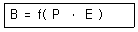
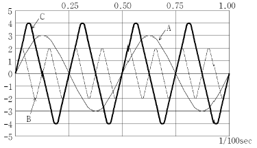
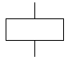
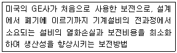
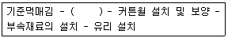

건설안전산업기사 (2012-03-04 기출문제)
1과목: 산업안전관리론
1. 다음 중 안전교육의 목적과 가장 거리가 먼 것은?
- 설비의 안전화
- 제도의 정착화
- 환경의 안전화
- 행동의 안전화
(정답률: 55%)

2. 안전교육의 단계 중 표준작업방법의 습관화를 위한 교육은?
- 태도교육
- 지식교육
- 기능교육
- 기술교육
(정답률: 68%)
3. 산업안전보건법상 사업 내 안전ㆍ보건교육 중 근로자 정기안전ㆍ보건교육 내용과 거리가 먼 것은?
- 산업안전 및 사고 예방에 관한 사항
- 산업보건 및 직업병 예방에 관한 사항
- 유해ㆍ위험 작업환경 관리에 관한 사항
- 작업공정의 유해ㆍ위험과 재해 예방대책에 관한 사항
(정답률: 39%)
4. 다음 중 상황성 누발자 재해유발원인과 거리가 먼 것은?
- 작업이 어렵기 때문
- 주의력이 산만하기 때문
- 기계설비에 결함이 있기 때문
- 심신에 근심이 있기 때문
(정답률: 35%)
5. 안전교육 3단계 중 2단계인 기능교육의 효과를 높이기 위해 가장 바람직한 교육방법은?
- 토의식
- 강의식
- 문답식
- 시범식
(정답률: 40%)
6. 재해의 원인분석법 중 사고의 유형, 기인물 등 분류항목을 큰 순서대로 도표화하여 문제나 목표의 이해가 편리한 것은?
- 파레토도(pareto diagram)
- 특성요인도(cause-reason diagram)
- 클로즈 분석(close analysis)
- 관리도(control chart)
(정답률: 70%)
7. 다음 중 산업안전심리의 5요소와 가장 거리가 먼 것은?
- 동기
- 기질
- 감정
- 기능
(정답률: 60%)
8. 다음 중 안전대의 죔줄(로프)의 구비조건이 아닌 것은?
- 내마모성 낮을 것
- 내열성이 높을 것
- 완충성이 높을 것
- 습기나 약품류에 잘 손상되지 않을 것
(정답률: 51%)
9. 다음 중 주의(attention)의 특징이 아닌 것은?
- 선택성
- 양립성
- 방향성
- 변동성
(정답률: 47%)
10. 허즈버그(Herzberg)의 동기ㆍ위생이론 중에서 위생요인에 해당하지 않는 것은?
- 보수
- 책임감
- 작업조건
- 관리감독
(정답률: 44%)
11. 산업재해 예방의 4원칙 중 “재해발생은 반드시 원인이있다.”라는 원칙은 무엇에 해당하는가?(오류 신고가 접수된 문제입니다. 반드시 정답과 해설을 확인하시기 바랍니다.)
- 대책 선정의 원칙
- 원인 연계의 원칙
- 손실 우연의 원칙
- 예방 가능의 원칙
(정답률: 69%)
12. 산업안전보건법상 사업주는 산업재해로 사망자가 발생한 경우 해당 사업재해가 발생한 날부터 얼마 이내에 산업재해조사표를 작성하여 관할 지방고용노동청장에게 제출하여야 하는가?
- 1일
- 7일
- 15일
- 1개월
(정답률: 55%)
13. 다음 중 잠재적인 손실이나 손상을 가져올 수 있는 상태나 조건을 무엇이라 하는가?
- 위험
- 사고
- 상해
- 재해
(정답률: 67%)
14. 다음 중 위험예지훈련 기초 4라운드(4R)에서 라운드별 내용이 옳게 연결된 것은?
- 1라운드 : 현상파악
- 2라운드 : 대책수립
- 3라운드 : 목표설정
- 4라운드 : 본질추구
(정답률: 69%)
15. 레빈(Lewin)은 인간행동과 인간의 조건 및 환경조건의 관계를 다음과 같이 표시하였다. 이 때 “f"를 설명한 것으로 옳은 것은?

- 행동
- 조명
- 지능
- 함수
(정답률: 71%)
16. 산업안전보건법상 아세틸렌 용접장치 또는 가스집합 용접장치를 사용하여 행하는 금속의 용접ㆍ용단 또는 가열 작업자에게 특별안전ㆍ보건교육을 시키고자 할 때의 교육내용으로 거리가 먼 것은?
- 용접흄ㆍ분진 및 유해광선 등의 유해성에 관한 사항
- 작업방법ㆍ작업순서 및 응급처치에 관한 사항
- 안전밸브의 취급 및 주의에 관한 사항
- 안전기 및 보호구 취급에 관한 사항
(정답률: 50%)
17. 리더십에 있어서 권한의 역할 중 조직이 지도자에게 부여한 권한이 아닌 것은?
- 보상적 권한
- 강압적 권한
- 합법적 권한
- 전문성의 권한
(정답률: 60%)
18. 다음 중 안전보건관리책임자에 대한 설명과 거리가 먼 것은?
- 해당 사업장에서 사업을 실질적으로 총괄관리 하는 자이다.
- 해당 사업장의 안전교육 계획을 수립 및 실시한다.
- 선임사유가 발생한 때에는 지체 없이 선임하고 지정하여야 한다.
- 안전관리자와 보건관리자를 지휘, 감독하는 책임을 가진다.
(정답률: 33%)
19. 어떤 사업장에서 510명 근로자가 1주일에 40시간, 연간50주를 작업하는 중에 21건의 재해가 발생하였다. 이 근로기간 중에 근로자 4%가 결근하였다면 도수율은 약 얼마인가?
- 0.15
- 21.45
- 22.80
- 41.18
(정답률: 57%)
20. 다음 중 산업안전보건법상 안전ㆍ보건 표지에서 기본 모형의 색상이 빨강이 아닌 것은?
- 산화성물질 경고
- 화기금지
- 탑승금지
- 고온 경고
(정답률: 54%)
2과목: 인간공학 및 시스템안전공학
21. 다음 중 작업장에서 광원으로부터의 직사휘광을 처리하는 방법으로 옳은 것은?
- 광원의 휘도를 늘인다.
- 광원을 시선에서 가까이 위치시킨다.
- 휘광원 주위를 밝게 하여 광도비를 늘린다.
- 가리개, 차양을 설치한다.
(정답률: 67%)
22. 다음 중 일반적인 지침의 설계 요령과 가장 거리가 먼 것은?
- 뾰족한 지침의 선각은 약 30° 정도를 사용한다.
- 지침의 끝은 눈금과 맞닿되 겹치지 않게 한다.
- 원형눈금의 경우 지침과 색은 선단에서 눈금의 중심까지 칠한다.
- 시차를 없애기 위해 지침을 눈금 면에 밀착시킨다.
(정답률: 34%)
23. 다음 중 인간의 실수(Human Errors)를 감소시킬 수 있는 방법으로 가장 적절하지 않은 것은?
- 직무수행에 필요한 능력과 기량을 가진 사람을 선정함으로써 인간의 실수를 감소시킨다.
- 적절한 교육과 훈련을 통하여 인간의 실수를 감소시킨다.
- 인간의 과오를 감소시킬 수 있도록 제품이나 시스템을 설계한다.
- 실수를 발생한 사람에게 주의나 경고를 주어 재발생하지 않도록 한다.
(정답률: 55%)
24. 다음 중 운용상의 시스템안전에서 검토 및 분석해야 할 사항으로 틀린 것은?
- 훈련
- 사고조사에의 참여
- ECR(Error Cause Removal) 제안 제도
- 고객에 의한 최종 성능검사
(정답률: 33%)
25. 다음 중 불대수(Boolean algebra)의 관계식으로 옳은 것은?
- A (AㆍB) = B
- A + B = AㆍB
- A + AㆍB = AㆍB
- (A + B)(A + C) = A + BㆍC
(정답률: 55%)
26. 다음 중 작업대에 관한 설명으로 틀린 것은?
- 경조립 작업은 팔꿈치 높이보다 0 ~ 10cm 정도 낮게 한다.
- 중조립 작업은 팔꿈치 높이보다 10 ~ 20cm 정도 낮게 한다.
- 정밀 작업은 팔꿈치 높이보다 0 ~ 10cm 정도 높게 한다.
- 정밀한 작업이나 장기간 수행하여야 하는 작업은 입식작업대가 바람직하다.
(정답률: 60%)
27. 1/100초 동안 발생한 3개의 음파를 나타낸 것이다. 음의 세기가 가장 큰 것과 가장 높은 음을 순서대로 짝지은 것은?

- A, B
- C, B
- C, A
- B, C
(정답률: 57%)
28. 다음 중 기준의 유형 가운데 체계기준(system criteria)에 해당되지 않는 것은?
- 운용비
- 신뢰도
- 사고빈도
- 사용상의 용이성
(정답률: 27%)
29. 다음 중 위험관리의 내용으로 틀린 것은?
- 위험의 파악
- 위험의 처리
- 사고의 발생 확률 예측
- 작업분석
(정답률: 41%)
30. 다음 중 연속조절 조종장치가 아닌 것은?
- 토글(Toggle)스위치
- 노브(Knob)
- 페달(Pedal)
- 핸들(Handle)
(정답률: 52%)
31. 정보 전달용 표시장치에서 청각적 표현이 좋은 경우가 아닌 것은?
- 메시지가 단순하다.
- 메시지가 복잡하다.
- 메시지가 그 때의 사건을 다룬다.
- 시각장치가 지나치게 많다.
(정답률: 70%)
32. 다음 중 정성적(아날로그) 표시장치를 사용하기에 가장 적절하지 않은 것은?
- 전력계와 같이 신속 정확한 값을 알고자 할 때
- 비행기 고도의 변화율을 알고자 할 때
- 자동차 시속을 일정한 수준으로 유지하고자 할 때
- 색이나 형상을 암호화하여 설계 할 때
(정답률: 47%)
33. 다음 중 시스템 안전분석법에 대한 설명으로 틀린 것은?
- 해석의 수리적 방법에 따라 정성적, 정량적 방법이 있다.
- 해석의 논리적 방법에 따라 귀납적, 연역적 방법이 있다.
- FTA는 연역적, 정량적 분석이 가능한 방법이다.
- PHA는 운용사고 해석이라고 말할 수 있다.
(정답률: 47%)
34. 다음 중 이동전화의 설계에서 사용성 개선을 위해 사용자의 인지적 특성이 가장 많이 고려되어야 하는 사용자 인터페이스 요소는?
- 버튼의 크기
- 전화기의 색깔
- 버튼의 간격
- 한글 입력 방식
(정답률: 63%)
35. 다음 중 반사형 없이 모든 방향으로 빛을 발하는 점광원에서 2m 떨어진 곳의 조도가 150lux라면 3m 떨어진 곳의 조도는 약 얼마인가?
- 37.5 lux
- 66.67 lux
- 337.5 lux
- 600 lux
(정답률: 51%)
36. 다음은 FT도의 논리 기호 중 어떤 기호인가?

- 결함사상
- 최후사상
- 기본사상
- 통상사상
(정답률: 58%)
37. 다음 중 완력검사에서 당기는 힘을 측정할 때 가장 큰 힘을 낼 수 있는 팔꿈치의 각도는?
- 90°
- 120°
- 150°
- 180°
(정답률: 41%)
38. 다음 중 반복되는 사건이 많이 있는 경우에 FTA의 최소 컷셋을 구하는 알고리즘이 아닌 것은?
- Boolean Algorithm
- Monte Carlo Algorithm
- MOCUS Algorithm
- Limnios & Ziani Algorithm
(정답률: 50%)
39. 다음 중 인간-기계 시스템에서 인간과 기계가 병렬로 연결된 작업의 신뢰도는?(단, 인간은 0.8, 기계는 0.98의 신뢰도를 갖고 있다.)
- 0.996
- 0.986
- 0.976
- 0.966
(정답률: 46%)
40. 다음 [보기]가 설명하는 것은?

- 생산보전
- 계량보전
- 사후보전
- 예방보전
(정답률: 49%)
3과목: 건설시공학
41. 웰포인트 공법에 대한 설명 중 옳지 않은 것은?
- 지하수위를 낮추는 공법이다.
- 파이프의 간격은 1~3m 정도로 한다.
- 일반적으로 사질지반에 이용하면 유효하다.
- 점토질 지반에 이용 시 샌드파일을 사용한다.
(정답률: 45%)
42. 다음 중 공사 도급계약서의 내용에 해당하지 않는 것은?
- 공사착수 시기
- 시공정밀도
- 계약에 관한 분쟁의 해결방안
- 도급금액
(정답률: 49%)
43. 기초지반의 성질을 적극적으로 개량하기 위한 지반개량 공법에 해당하지 않는 것은?
- 다짐공법
- 탈수공법
- 고결안정공법
- 언더피닝공법
(정답률: 65%)
44. 가이데릭의 붐 회전범위는 얼마인가?
- 90°
- 180°
- 270°
- 360°
(정답률: 62%)
45. 어스앵커(Earth Anchor) 공법에 의한 기초 흙막이에 대한 설명으로 옳지 않은 것은?
- 하중을 산정할 때 예상되는 수위는 항상 평균 수위로 고려하여야 한다.
- 앵커체는 수평에서 하향 10°~ 45° 범위 내에서 경제성과 안정성을 고려하여 경사각을 결정한다.
- 앵커의 내력을 확인하기 위하여 각 앵커에 작용하는 설계하중의 1.2배로 긴장하여 그 지지력을 확인한 후 설계하중으로 정착한다.
- 정착부의 해체는 채택된 공법에 맞는 것으로 하고, 긴장력을 급격히 푸는 것은 피한다.
(정답률: 50%)
46. 콘크리트 공사에서 골재중의 수량을 측정할 때 표면수는 없지만 내부는 포화상태로 함수되어 있는 골재의 상태를 무엇이라 하는가?
- 절건상태
- 표건상태
- 기건상태
- 습윤상태
(정답률: 67%)
47. 거푸집 공사에서 거푸집 검사에 있어 받침기둥(지주의 안전하중)검사와 가장 거리가 먼 것은?
- 서포트 수직 여부 및 간격
- 폼타이 등 조임철물의 재질
- 서포트의 편심, 처짐 및 나사의 느슨한 정도
- 수평연결대의 설치 여부
(정답률: 63%)
48. 철골공사의 녹막이칠에 대한 기술 중 옳지 않은 것은?
- 초음파탐상검사에 지장을 미치는 범위는 녹막이칠을 하지 않는다.
- 바탕만들기를 한 강재표면은 녹이 생기기 쉽기 때문에 즉시 녹막이칠을 하여야 한다.
- 콘크리트에 묻히는 부분에는 녹막이칠을 하여야 한다.
- 현장 용접부분은 용접부에서 100mm 이내에 녹막이 칠을 하지 않는다.
(정답률: 75%)
49. 흙파기공법 중 트렌치컷공법과 역순으로 하는 공법은?
- 아일랜드공법
- 장함공법
- 타이로드공법
- 어스앵커공법
(정답률: 73%)
50. 보통 콘크리트 공사에서 굳지 않은 콘크리트에 포함된 염화물량은 염소이온량으로서 얼마 이하를 원칙으로 하는가?
- 0.2kg/m3
- 0.3kg/m3
- 0.4kg/m3
- 0.7kg/m3
(정답률: 73%)
51. 다음 금속커튼월 공사의 작업흐름 중 ( )에 가장 적합한 것은?

- 자재정리
- 구체 부착철물의 설치
- seal 공사
- 표면마감
(정답률: 73%)
52. 다음 중 자연 함수비가 어떤 상태에 있을 때 점토지반이 가장 안정한가?
- 소성한계
- 소성과 수축한계 사이
- 액성한계
- 수축한계
(정답률: 49%)
53. 현장에서의 시공 준비사항 중 대지상황을 파악하는 일은 매우 중요하다. 다음 중 대지 상황확인의 내용으로 옳지 않은 것은?
- 공사가 착공되면 바로 대지경계선을 확인하고 표시나 사진을 남긴다.
- 대지의 형상 및 높이를 설계도와 대비하여 실측하고 벤치마크(Bench Mark)를 설치한다.
- 공사에 영향을 미칠 수 있는 지하매설물이나 지상장애물을 조사한다.
- 지질조사가 충실한지를 확인하고 지층의 경사, 지하수 등의 자료를 조사한다.
(정답률: 71%)
54. 시방서(Specification)는 발주자가 의도하는 건축물을 건설하기 위하여 시공자에게 요구하는 모든 상황을 나타낸 것중 도면을 제외한 모든 것이라 할 수 있다. 다음 중 시방서 작성시 서술내용에 해당하지 않는 것은?
- 재료, 장비, 설비의 유형과 품질
- 입찰참가 자격 평가기준
- 조립, 설치, 세우기의 방법
- 시험 및 코드요건
(정답률: 70%)
55. 흙막이 벽에 사용되는 계측장비의 연결이 옳은 것은?
- 두부변형ㆍ침하 - 트랜싯
- 측압ㆍ수동토압 - 변형계
- 응력 - 경사계
- 중간부 변형 - 레벨
(정답률: 62%)
56. 철근콘크리트공사에서의 철근이음에 대한 설명 중 옳지 않은 것은?
- 철근의 이음위치는 되도록 응력이 큰 곳을 피한다.
- 이음을 할 때는 한 곳에서 철근 수의 반 이상을 이여야 한다.
- 철근이음에는 겹침이음, 용접이음, 기계적이음 등이 있다.
- 철근이음은 힘의 전달이 연속적이고, 응력집 등 부작용이 생기지 않아야 한다.
(정답률: 80%)
57. 거푸집 측압에 영향을 주는 요인에 관한 설명 중 옳지 않은 것은?
- 콘크리트 타설속도가 빠를수록 측압이 크다.
- 묽은 콘크리트일수록 측압이 크다.
- 철근량이 많을수록 측압이 크다.
- 조강시멘트 등 응결시간이 빠른 것을 사용할수록 측압은 작아진다.
(정답률: 63%)
58. 다음 중 철골공사와 직접적으로 관련된 용어가 아닌 것은?
- 토크렌치
- 너트 회전법
- 베인 테스트
- 스터드 볼트
(정답률: 80%)
59. 수밀 콘크리트 공사에 대한 설명으로 옳지 않은 것은?
- 배합은 콘크리트 소요의 품질이 얻어지는 범위 내에서 단위수량 및 물시멘트비는 되도록 적게 하고, 단위 굵은골재량을 가급적 크게 한다.
- 소요 슬럼프는 210mm를 넘지 않도록 한다.
- 연속 타설 시간간격은 외기온이 25℃ 미만일 때는 90분 이내로 한다.
- 거푸집 조립에 사용하는 긴결철물은 콘크리트 경화 후 그 부분에서 누수가 발생하지 않는 것을 사용한다.
(정답률: 64%)
60. 구조물의 시공과정에서 발생하는 구조물의 팽창 또는 수축과 관련된 하중으로, 신축량이 큰 장경간, 연도, 원자력발전소 등을 설계할 때나 또는 일교차가가 큰 지역의 구조물에 고려해야 하는 하중은?
- 시공 하중
- 충격 및 진동하중
- 온도 하중
- 이동 하중
(정답률: 71%)
4과목: 건설재료학
61. 특수모르타르의 일종으로서 광택 및 특수 치장용으로 사용되는 것은?
- 규산질모르타르
- 질석모르타르
- 석면모르타르
- 합성수지혼화모르타르
(정답률: 53%)
62. 다음 석재 중 화성암(火成巖) - 심성암(深成巖) - 현정질(顯晶質)에 해당하는 것은?
- 화강암
- 안산암
- 응화암
- 편암
(정답률: 72%)
63. 목재의 일반적인 성질에 대한 설명으로 옳지 않은 것은?
- 전기저항성은 함수율에 따라 다르다.
- 재질 및 섬유방향에 따라 강도 차이가 있다.
- 비중에 비해 강도가 작은 편이다.
- 열전도율이 매우 낮다.
(정답률: 67%)
64. 보통포틀랜드 시멘트와 비교했을 때 고로(高爐)시멘트의 일반적 특성에 해당되지 않는 것은?
- 내열성이 크고 수밀성이 양호하다.
- 수화열이 적어 매스콘크리트에 적합하다.
- 초기강도가 크다.
- 해수(海水)에 대한 저항성이 크다.
(정답률: 51%)
65. 다음 금속관 중 가장 내산성이 우수한 것은?
- 연관
- 동관
- 알루미늄관
- 강관
(정답률: 38%)
66. 화강암에 대한 설명 중 옳지 않은 것은?
- 내화도가 높아 가열시 균열이 적다.
- 내마모성이 우수하다.
- 절리의 거리가 비교적 커서 큰 판재를 생산할 수 있다.
- 구조재로 사용이 가능하다.
(정답률: 34%)
67. 다음 중 콘크리트용 철근의 부식을 방지하기 위해 일반적으로 사용되는 방청제의 주성분은?
- 페놀
- 테라핀유
- 염화칼슘
- 아초산염
(정답률: 33%)
68. 다음 중 시멘트의 제조공정 순서에서 가장 먼저 하는 공정은?
- 주원료의 분쇄
- 혼합
- 가열 및 소성
- 석고첨가
(정답률: 75%)
69. KS F 3211(건설용 도막방수재)에서 주요 원료에 따른 방수재의 종류에 해당하지 않는 것은?
- 우레탄 고무계 방수재
- 아크릴 고무계 방수재
- 에폭시 수자계 방수재
- 고무 아스팔트계 방수재
(정답률: 46%)
70. 보통콘크리트의 단위시멘트량 최소치로 옳은 것은?
- 200 kg/m3
- 250 kg/m3
- 270 kg/m3
- 300 kg/m3
(정답률: 40%)
71. 다음 중 열려진 여닫이문이 저절로 닫히게 하는 장치는?
- 도어 스톱
- 도어 체크
- 꽂이쇠
- 나이트 래치
(정답률: 76%)
72. 솔, 롤러 등으로 용이하게 도포할 수 있도록 아스팔트를 휘발성 용제에 용해한 비교적 저점도의 액체로써 방수시공의 첫 번째 공정에 쓰는 바탕처리재는?
- 아스팔트 컴파운드
- 아스팔트 루핑
- 아스팔트 펠트
- 아스팔트 프라이머
(정답률: 56%)
73. 건축용 접착제에 기본적으로 요구되는 성능으로 옳지 않은 것은?
- 경화시 체적수축 등의 변형을 일으키지 않을 것
- 취급이 용이하고 사용시 유동성이 없을 것
- 장기 하중에 의한 크리프가 없을 것
- 진동, 충격의 반복에 잘 견딜 것
(정답률: 50%)
74. 시멘트 클링커 구성화합물 중 아리트라고도 부르며 수화반응이 비교적 빠르고 시멘트의 초기강도(3~28일 강도)를 지배하는 것은?
- 규산 제3칼슘(C3S)
- 규산 제2칼슘(C2S)
- 알루민산 제3칼슘(C3A)
- 알루민산철 제4칼슘(C4AF)
(정답률: 33%)
75. 다음 재료 중 건물외벽에 사용이 적합하지 않은 것은?
- 유성페인트
- 에나멜페인트
- 합성수지 에멀션페인트
- 바니시
(정답률: 71%)
76. 투명도가 높으므로 유기유리라는 명칭이 있고 착색이 자유로워 채광판, 도어판, 칸막이판 등에 이용되는 것은?
- 아크릴수지
- 알키드수지
- 멜라민수지
- 폴리에스테르수지
(정답률: 68%)
77. 콘크리트의 동결과 융해에 대한 저항성을 높이는 방법으로 옳지 않은 것은?
- AE제를 사용한다.
- 빈배합의 콘크리트를 만든다.
- 물시멘트비를 줄인다.
- 수밀한 콘크리트를 만든다.
(정답률: 46%)
78. 다음 접착제 중 고무상의 고분자물질로서 내유성 및 내약품성이 우수하며 줄눈재, 구멍메움재로 사용되는 것은?
- 천연고무
- 치오콜
- 네오프렌
- 아교
(정답률: 39%)
79. 섬유벽 바름에 대한 설명으로 옳지 않은 것은?
- 주원료는 섬유상 또는 입상물질과 이들의 혼합재이다.
- 균열발생은 크나, 내구성이 우수하다.
- 목질섬유, 합성수지 섬유, 암면 등이 쓰인다.
- 시공이 용이하기 때문에 기존벽에 덧칠하기도 한다.
(정답률: 50%)
80. 다음 중 황동의 주성분으로 옳은 것은?
- 구리와 아연
- 구리와 니켈
- 구리와 알루미늄
- 구리와 철
(정답률: 68%)
5과목: 건설안전기술
81. 사업주가 높이 1m 이상인 계단의 개방된 측면에 안전난간을 설치하고자 할 때 그 설치 기준으로 옳지 않은 것은?
- 난간이 높이는 90cm~120cm가 되도록 할 것
- 난간은 계단참을 포함하여 각 층의 계단 전체에 걸쳐서 설치할 것
- 금속제 파이프로 된 난간은 2.7cm 이상의 지름을 갖는 것일 것
- 난간은 임의의 점에 있어서 임의의 방향으로 움직이는 80kg 이하의 하중에 견딜 수 있는 튼튼한 구조일 것
(정답률: 68%)
82. 공사용 가설도로의 일반적으로 허용되는 최고 경사도는 얼마인가?
- 5%
- 10%
- 20%
- 30%
(정답률: 41%)
83. 구조물 해체 작업용 기계기구와 직접적으로 관계가 없는 것은?
- 대형브레이커
- 압쇄기
- 핸드브레이커
- 착암기
(정답률: 55%)
84. 타워크레인을 벽체에 지지하는 경우 서면심사 서류 등이 없거나 명확하지 아니할 때 설치를 위해서는 특정 기술자의 확인을 필요로 하는데, 그 기술자에 해당하지 않는 것은?
- 건설안전기술사
- 기계안전기술사
- 건축시공기술사
- 건설안전분야 산업안전지도사
(정답률: 55%)
85. 콘크리트 타설 작업 시 준수사항으로 옳지 않은 것은?
- 바닥위에 올린 콘크리트는 완전히 청소한다.
- 가능한 높은 곳으로부터 자연 낙하시켜 콘크리트를 타설한다.
- 지나친 진동기 사용은 재료분리를 일으킬 수 있으므로 금해야 한다.
- 최상부의 슬래브는 이어붓기를 되도록 피하고 일시에 전체를 타설하도록 한다.
(정답률: 61%)
86. 철골작업을 실시할 때 작업을 중지하여야 하는 악천후의 기준에 해당하지 않는 것은?
- 풍속이 10m/s 이상인 경우
- 지진이 진도 3 이상인 경우
- 강우량이 1mm/h 이상인 경우
- 강설량이 1cm/h 이상인 경우
(정답률: 58%)
87. 가설통로의 설치기준으로 옳지 않은 것은?
- 경사는 30° 이하로 할 것
- 경사가 15° 를 초과하는 경우에는 미끄러지지 아니하는 구조로 할 것
- 높이 8m 이상인 비계다리에는 8m 이내마다 계단참을 설치할 것
- 수직갱에 가설된 통로의 길이가 15m 이상인 경우에는 10m 이내마다 계단참을 설치할 것
(정답률: 62%)
88. 크레인의 종류에 해당하지 않는 것은?
- 자주식 트럭 크레인
- 크롤러 크레인
- 타워 크레인
- 가이 데릭
(정답률: 57%)
89. 연약한 점토층을 굴착하는 경우 흙막이 지보공을 견고히 조립하였음에도 불구하고 흙막이 바깥에 있는 흙이 안으로 밀려들어 불룩하게 융기되는 현상은?
- 보일링(Boiling)
- 히빙(Heaving)
- 드레인(Drain)
- 펌핑(Pumping)
(정답률: 63%)
90. 주행크레인 및 선회크레인과 건설물 사이에 통로를 설치하는 경우, 그 폭은 최소 얼마 이상으로 하여야 하는가?(단, 건설물의 기둥에 접촉하지 않는 부분인 경우)
- 0.3m
- 0.4m
- 0.5m
- 0.6m
(정답률: 44%)
91. 콘크리트 타설 후 물이나 미세한 불순물이 분리 상승하여 콘크리트 표면에 떠오르는 현상을 가리키는 용어와 이때 표면에 발생하는 미세한 물질을 가리키는 용어를 옳게 나열한 것은?
- 블리딩 - 레이턴스
- 보링 - 샌드드레인
- 히빙 - 슬라임
- 블로우홀 - 스래그
(정답률: 56%)
92. 작업으로 인하여 물체가 떨어지거나 날아올 위험이 있을 때 위험방지 조치 및 설치 준수사항으로 옳지 않은 것은?
- 수직 보호망 또는 방호 선반 설치
- 낙하물 방지망의 내민길이는 벽면으로부터 2m 이상 유지
- 낙하물 방지망의 수평면과의 각도는 20° 내지 30°유지
- 낙하물 방지망 설치 높이는 10m 이상마다 설치
(정답률: 39%)
93. 사다리식 통로의 구조에 대한 설명으로 옳지 않은 것은?
- 견고한 구조로 할 것
- 폭은 20cm 이상의 간격을 유지할 것
- 심한 손상ㆍ부식 등이 없는 재료를 사용할 것
- 발판과 벽과의 사이는 15cm 이상을 유지할 것
(정답률: 67%)
94. 철골공사 중 트랩을 이용해 승강할 때 안전과 관련된 항목이 아닌 것은?
- 수평구명줄
- 수직구명줄
- 안전벨트
- 추락방지대
(정답률: 47%)
95. 추락에 의한 위험방지 조치사항으로 거리가 먼 것은?
- 투하설비 설치
- 작업발판 설치
- 추락방지망 설치
- 근로자에게 안전대 착용
(정답률: 63%)
96. 지반개량공법 중 고결안정공법에 해당하지 않는 것은?
- 생석회 말뚝공법
- 동결공법
- 동다짐공법
- 소결공법
(정답률: 31%)
97. 양중기의 와이어로프 등 달기구의 안전계수 기준으로 옳지 않은 것은?
- 크레인의 고리걸이 용구인 와이어로프는 5 이상
- 화물의 하중을 직접 지지하는 달기체인은 4 이상
- 훅, 샤클, 클램프, 리프팅 빔은 3 이상
- 근로자가 탑승하는 운반구를 지지하는 달기체인은 10 이상
(정답률: 47%)
98. 슬레이트 지붕위에서 작업을 할 때 산업안전보건법에서 정한 작업발판의 최소 폭은?
- 20cm 이상
- 30cm 이상
- 40cm 이상
- 50cm 이상
(정답률: 58%)
99. 화물취급 작업 중 화물 적재 시 준수해야 하는 사항에 속하지 않는 것은?
- 침하의 우려가 없는 튼튼한 기반 위에 적재할 것
- 중량의 화물은 건물의 칸막이나 벽에 기대어 적재할 것
- 불안정할 정도로 높이 쌓아 올리지 말 것
- 편하중이 생기지 아니하도록 적재할 것
(정답률: 68%)
100. 해체용 기계ㆍ기구의 취급에 대한 설명으로 틀린 것은?
- 해머는 적절한 직경과 종류의 와이어로프로 매달아 사용해야 한다.
- 압쇄기는 셔블(shovel)에 부착설치하여 사용한다.
- 차체에 무리를 초래하는 중량의 압쇄기 부착을 금지 한다.
- 해머 사용시 충분한 견인력을 갖춘 도저에 부착하여 사용한다.
(정답률: 26%)